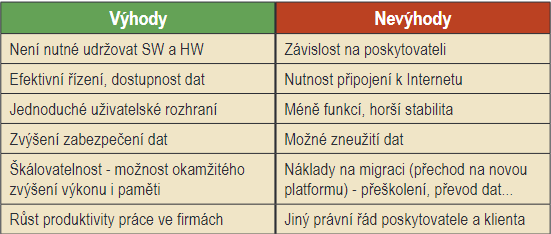

Cloud computing
Cloud computing je nový výpočetní model založený na poskytování služeb a programů uložených na internetových serverech, k nimž mohou uživatelé přistupovat pomocí klientských aplikací (nejčastěji webového prohlížeče) a používat je prakticky odkudkoliv. V případě placených služeb uživatelé neplatí za vlastní software, ale za jeho užití.
Veřejný cloud
Veřejný cloud je určen pro velký nebo neomezený počet klientů (např. Skype, Seznam), zatímco privátní cloud je k dispozici pro omezený počet zákazníků. Hybridní cloudy pak kombinují veřejný i privátní přístup, navenek však nabízejí jednotné standardizované rozhraní.
Vedle každodenně používaných internetových služeb, jakými jsou internetové vyhledávače (Google, Bing, Seznam), webmail servery (Gmail, Hotmail, Seznam) nebo cloudová úložiště (OneDrive, GoogleDrive, iCloud, Dropbox, Uložto), může být cloud využit pro distribuované výpočty (Cloud Skype), provozování běžných uživatelských aplikací (Google Apps, Microsoft Office365, Adobe Creative Cloud), ale i pro systémy přístupné přes prohlížeče (eyeOS).
DISTRIBUČNÍ MODELY:
Podle obsahu i způsobu nabídky cloudové služby rozlišujeme tyto modely:IaaS
IaaS (Infrastructure as a Service - infrastruktura jako služba). Poskytovatel služeb nabízí klientům celou infrastrukturu, typicky virtuální stroje. Hlavní výhodou tohoto přístupu je, že se o veškeré problémy s hardwarem stará poskytovatel. Příkladem jsou Amazon EC2, Rackspace Cloud nebo Microsoft Azure.
PaaS
PaaS (Platform as a Service - platforma jako služba). V tomto modelu jsou poskytovány kompletní prostředky pro podporu celého životního cyklu tvorby a distribuce webových. Toto řešení, vhodné pro vývojáře, zahrnuje různé prostředky pro vývoj aplikace (IDE, API), ale i pro její údržbu. Příkladem poskytovatelů PaaS jsou Google App Engine, Force.com nebo Heroku.
SaaS
SaaS (Software as a Service - software jako služba). Aplikace je licencována jako služba pronajímaná uživateli a přístupná odkudkoliv a kdykoliv. Příkladem může být známá sada aplikací Google Apps nebo v logistice známý systém Cargopass.
